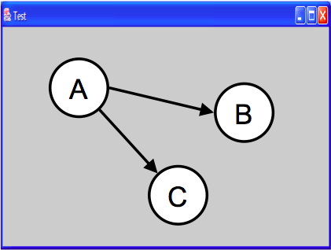
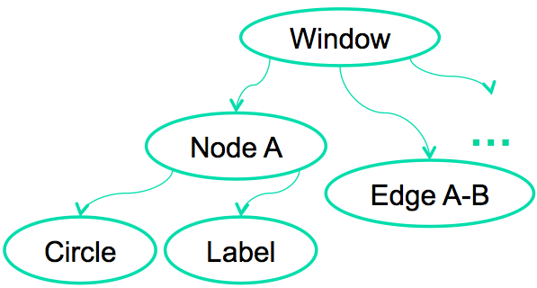
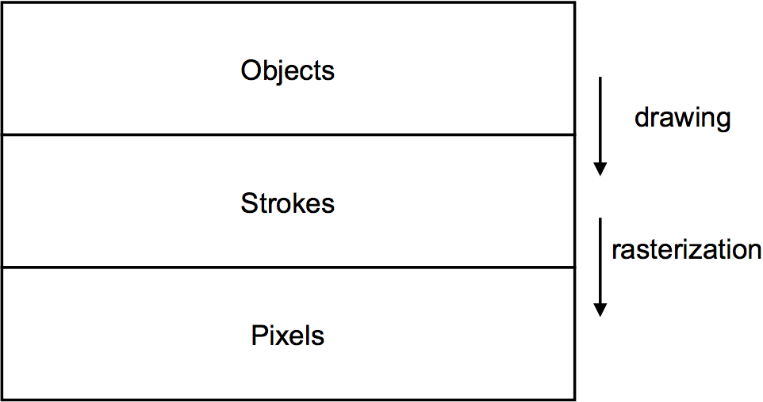
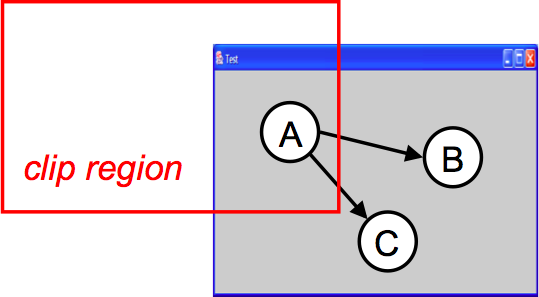
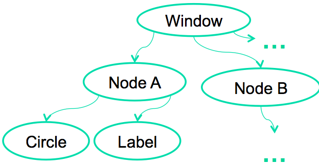
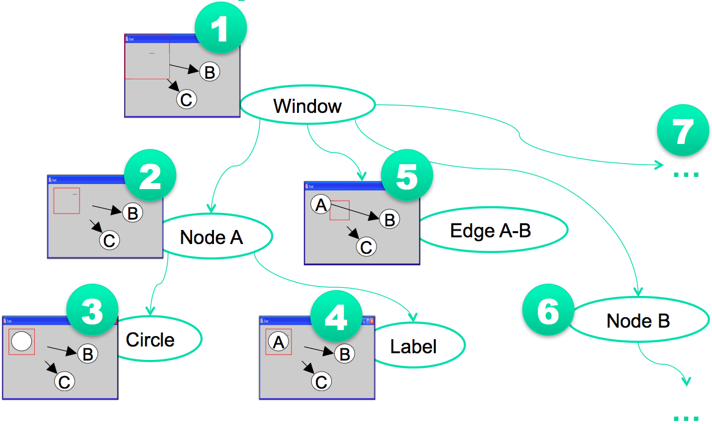
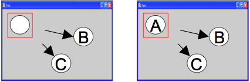

Now we'll cover a set of implementation topics. The goal is not to teach any one particular GUI system or toolkit, but to give a survey of the issues involved in GUI programming and the range of solutions adopted by various systems.
Output Representations
Three Output Representations
- Objects
- Graphical objects arranged in a tree with automatic redraw
- Example: Label object, Line object
- Also called: views, interactors, widgets, controls, elements
- Strokes
- High-level drawing primitives: lines, shapes, curves, text
- Example: `drawText()` method, `drawLine()` method
- Also called: vector graphics, structured graphics
- Pixels
- 2D array of pixels
- Also called: raster, image, bitmap
There are basically three ways to represent the output of a graphical user interface.
- **Objects** is the same as the view tree we discussed previously. Parts of the display are represented by view objects arranged in a spatial hierarchy, with automatic redraw propagating down the hierarchy. There have been many names for this idea over the years; the GUI community hasn't managed to settle on a single preferred term.
- **Strokes** draws output by making procedure calls to high-level drawing primitives, like `drawLine`, `drawRectangle`, `drawArc`, and `drawText`.
- **Pixels** regards the screen as an array of pixels and deals with the pixels directly.
All three output representations appear in virtually every modern GUI application. The object representation always appears at the very top level, for windows, and often for graphical objects within the windows as well. At some point, we reach the leaves of the view hierarchy, and the leaf views draw themselves with stroke calls. A graphics package then converts those strokes into pixels displayed on the screen. For performance reasons, an object may short-circuit the stroke package and draw pixels on the screen directly. On Windows, for example, video players do this using the DirectX interface to have direct control over a particular screen rectangle.
Example: Designing a Graph View


- Object representation
- Each node and edge is an object in the view tree
- A node object might have two child objects: circle and label
- Stroke representation
- Graph view draws lines, circles and text
- Pixel representation
- Graph view has pixel images of the nodes
Since virtually every GUI uses all three representations, the design question becomes: at which points in your application do you want to step down into a lower-level kind of output? Here's an example. Suppose you want to build a view that displays a graph of nodes and edges.
One way to do it would represent each node and each edge in the graph by an object (as in the tree below the example view). Each node in turn might have two child objects, a circle and a text label. Eventually, you'll get down to the primitive objects available in your GUI toolkit. Most GUI toolkits provide a text label; most don't provide a primitive circle. (One notable exception is SVG, which has object equivalents for all the common drawing primitives.) This would be a **pure object representation**, at least from your application's point of view - stroke output and pixel output would still happen, but inside primitive objects that you took from the library.
Alternatively, the top-level window might have no child objects. Instead, it would draw the entire graph by a sequence of stroke calls: `drawCircle` for the node outlines, `drawText` for the labels, `drawLine` for the edges.
This would be a **pure stroke**.
Finally, your graph view might bypass stroke drawing and set pixels in the window directly. The text labels might be assembled by copying character images to the screen. This **pure pixel representation** is rarely used nowadays, because it's the most work for the programmer, but it used to be the only way to program graphics.
Hybrid representations for the graph view are certainly possible, in which some parts of the output use one representation, and others use another. The graph view might use objects for nodes, but draw the edges itself as strokes. It might draw all the lines itself, but use label objects for the text.
How Output Representations Interact

As we said earlier, almost every GUI program uses all three representations. At the highest level, a typical program presents itself in a window, which is an object. At the lowest level, the window appears on the screen as a rectangle of pixels. So a series of steps has to occur that translates that window object (and all its descendents in the view tree) into pixels.
The step from objects down to strokes is usually called **drawing**. We'll look at that first.
The step from strokes down to pixels is called **rasterization** (or scan conversion). The specific algorithms that rasterize various shapes are beyond the scope of this course (if interested, take a Computer Graphics course). But we'll talk about some of the effects of rasterization, and what you need to know as a UI programmer to control those effects.
Answer this question: [Output Representations](https://docs.google.com/forms/d/e/1FAIpQLSdI2CdX7drnpd5hABO2w6-y4k3TEERXkdw8D1DggCytBRf7QA/viewform?usp=sf_link)
Drawing
How a View Tree is Drawn
- Drawing goes top down
- Draw self (using strokes or pixels)
- For each child object,
- If child intersects clipping region then
- intersect clipping region with child's bounding box
- recursively draw child with clip region set to the intersection


Here's how drawing works in the object representation. Drawing is a top-down process: starting from the root of the view tree, each object draws itself, then draws each of its children recursively. The process is optimized by passing a clipping region to each object, indicating the area of the screen that needs to be drawn. Children that do not intersect the clipping region are simply skipped, not drawn. In the example above, nodes B and C would not need to be drawn. When an object partially intersects the clipping region, it must be drawn - but any strokes or pixels it draws when the clipping region is in effect will be masked against the clip region, so that only pixels falling inside the region actually make it onto the screen.
For the root, the clipping region might be the entire screen. As drawing descends the tree, however, the clipping region is intersected with each object's bounding box. So the clipping region for an object deep in the tree is the intersection of the bounding boxes of its ancestors.
For high performance, the clipping region is normally rectangular, using **bounding boxes** rather than the graphical object's actual shape. But it doesn't have to be that way. A clipping region can be an arbitrary shape on the screen. This can be very useful for visual effects: e.g., setting a string of text as your clipping region, and then painting an image through it like a stencil. Postscript was the first stroke abstraction to allow this kind of nonrectangular clip region. Now many graphics toolkits support nonrectangular clip regions. For example, on
Microsoft Windows and X Windows, you can create nonrectangular windows, which clip their children into a nonrectangular region.
Redraw Example

Here's an example of the redraw algorithm running on the graph window (starting with the clipping region shown on the last slide).
1. First the clip region is intersected with the whole window's bounding box, and the window is told to draw itself within that intersection. The window draws its titlebar and its gray background. The window background effectively erases the previous contents of the window.
2. The window's clip region is now intersected with its first child's bounding box (Node A), and Node A is told to draw itself within that. In this particular example (where nodes are represented by circle and label objects), Node A doesn't do any of its own drawing; all the drawing will be handled by its children.
3. Now Node A's circle child is told to draw itself. In this case, the circle has the same bounding box as Node A itself, so it receives the same clip region that Node A did. It draws a white circle.
4. Now Node A's label child is told to draw itself, again using the same clip region because it has the same bounding box. It draws text on top of the circle just drawn.
5. Popping back up the tree, the next child of the window, Edge A-B, is told to draw itself, using the clip region that intersects its own bounding box with the window's clip region. Only part of the edge falls in this clip region, so the edge only draws part of itself.
6. The algorithm continues through the rest of the tree, either drawing children or skipping them depending on whether they intersect the clip region. (Would Node B be drawn? Would Edge A-C be drawn? Would Node C be drawn?)
Note that the initial clip region passed to the redraw algorithm will be different every time the algorithm is invoked. Clip regions generally come from damage rectangles, which will be explained in a moment.
Z Order

- 2D GUIs are really "2.5D"
- Drawing order produces layers
- Not a true z coordinate for each object, but merely an **ordering** in the z dimension
- View tree and redraw algorithm dictate z order
- Parents are drawn first, underneath children
- Older siblings are drawn under younger ones
- Flex, HTML, most GUI toolkits and drawing programs behave this way
- Java Swing is backwards: last child added (highest index) is drawn first
- CSS has a z-index property that overrides tree structure
When the bounding boxes of two objects overlap, like the circle and label objects in the previous example, the redraw algorithm induces an ordering on the objects that makes them appear layered, one on top of the other. For this reason, 2D graphical user interfaces are sometimes called 2.5D. They aren't fully 3D, in which objects have x, y, and z coordinates; instead the z dimension is merely an ordering, called **z order**.
Z order is a side-effect of the order that the objects are drawn when the redraw algorithm passes over the tree.
Since drawing happens top-down, parents are generally drawn underneath children (although parents get control back after their children finish drawing, so a parent can draw some more on top of all its children if it wants). Older siblings (with lower indexes in their parent's array of children) are generally drawn underneath younger ones. Java Swing is a curious exception to this - its redraw algorithm draws the highest-index child first, so the youngest sibling ends up on the bottom of the z order.
Z order can be affected by rearranging the tree, e.g., moving children to a different index position within their parent, or promoting them up the tree if necessary. This is often important for operations like drag-and-drop, since we generally want the object being dragged to appear on top of other objects.
Some GUI toolkits allow you to change the z-order of an element without moving its position in the tree. In
HTML, the CSS z-index property lets you do that. There's [a nice page](http://tjkdesign.com/articles/z-index/teach_yourself_how_elements_stack.asp) that lets you explore how the z-index property works.
Strokes
Going From Objects to Strokes
- Drawing method approach
- e.g., Swing `paint()` method
- Drawing method is called directly during redraw; override it to change how object draws itself
- Retained graphics approach
- e.g., Adobe Flex
- Stroke calls are recorded and played back at redraw time
- Differences
- Retained graphics is less error prone
- Drawing method gives more control and performance
In our description of the redraw algorithm, we said a graphical object "draws itself," meaning that it produces strokes to show itself on the screen. How that is actually done depends on the GUI toolkit you're using.
In Java Swing (and many other desktop GUI toolkits, like Win32 and Cocoa), every object has a **drawing method**. In
Swing, this method is `paint()`. The redraw algorithm operates by recursively calling `paint()` down the view hierarchy.
Objects can override the `paint()` method to change how they draw themselves. In fact, Swing breaks the `paint()` method down into several overridable template methods, like `paintComponent()` and `paintChildren()`, to make it easier to affect different parts of the redraw process. More about Swing's painting process can be found in ["Painting in AWT and Swing"](http://www.oracle.com/technetwork/java/painting-140037.html) by Amy Fowler .
In Adobe Flex, there's no drawing method available to override - the redraw algorithm is hidden from the programmer, much like the event loop is hidden by these toolkits. Instead, you make a sequence of stroke calls into the object, and the object records this sequence of calls. Subsequently, whenever the object needs to redraw itself, it just plays back the recorded sequence of stroke calls. This approach is sometimes called **retained graphics**.
A key difference between these approaches is *when* stroke calls can be made. With the drawing method approach, drawing should only be done while the drawing method is active. Drawing done at a different time (like during an event handler) will not interact correctly with the redraw algorithm; it won't respect z order, and it will be ephemeral, overwritten and destroyed the next time the redraw algorithm touches that object. With the retained graphics approach, however, the stroke calls can be recorded at any time, and the toolkit automatically handles playing them back at the right point in the redraw.
The retained graphics approach tends to be less error prone for a programmer; drawing at the wrong time is a common mistake for beginning Swing programmers.
A potential downside of the retained graphics approach is performance. The recorded strokes must be stored in memory.
Although this recording is not as heavyweight as a view tree (since it doesn't have to handle input or layout, or even necessarily be represented as objects), you probably wouldn't want to do it with millions of stroke calls. So if you had an enormous view (like a map) being displayed inside a scrolling pane (so that only a small part of it was visible on screen), you wouldn't want to stroke the entire map. The drawing method approach gives more control over this; since you have access to the clip region in the drawing method, you can choose not to render strokes that would be clipped. To do the equivalent thing with retained graphics would put more burden on the programmer to determine the visible rectangle and rerecord the stroke calls every time this rectangle changed.
Stroke Representation
- Drawing surface
- Also called drawable (X Windows), GDI (MS Win)
- Screen, memory buffer, print driver, file, remote screen
- Graphics context
- Encapsulates drawing parameters so they don't have to be passed with each call to a drawing primitive
- Font, color, line width, fill pattern, etc.
- Coordinate system
- Clipping region
- Drawing primitives
- Line, circle, ellipse, arc, rectangle, text, polyline, shapes
Now let's look at the drawing capabilities provided by the stroke representation.
Every toolkit's stroke library has some notion of a **drawing surface**. The screen is only one possible place where drawing might go. Another common drawing surface is a memory buffer, which is an array of pixels just like the screen. Unlike the screen, however, a memory buffer can have arbitrary dimensions. The ability to draw to a memory buffer is essential for double-buffering, a technique for efficiently handling redraw by keeping an identical copy of the screen contents in a memory buffer. Another target is a printer driver, which forwards the drawing instructions on to a printer. Although most printers use a pixel representation internally (when the ink actually hits the paper), the driver often uses a stroke representation to communicate with the printer, for compact transmission. Postscript, for example, uses strokes.
Most stroke libraries also include some kind of a **graphics context**, an object that bundles up drawing parameters like color, line properties (width, end cap, join style), fill properties (pattern), and font.
The stroke library may also provide a current **coordinate system**, which can be translated, scaled, and rotated around the drawing surface. We've already discussed the **clipping region**, which acts like a stencil for the drawing. Finally, a stroke library must provide a set of **drawing primitives**, function calls that actually produce graphical output.
Many systems combine all these responsibilities into a single object. Java's Graphics object and HTML's `CanvasRenderingContext2D` are good examples of this approach. In other toolkits, the drawing surface and graphics context are independent objects that are passed along with drawing calls.
When states like graphics context, coordinate system, and clipping region are embedded in the drawing surface, the surface must provide some way to save and restore the context. A key reason for this is so that parent views can pass the drawing surface down to a child's draw method without fear that the child will change the graphics context. In Java, for example, the context can be saved by `Graphics.create()`, which makes a copy of the Graphics object. Notice that this only duplicates the graphics context; it doesn't duplicate the drawing surface, which is still the same.
Answer this question: [Drawing & Strokes](https://docs.google.com/forms/d/e/1FAIpQLSd_C6N-bieFsU9jckKK_gqRWTPZke1aHe2aycSnjr9o45IYsQ/viewform?usp=sf_link)
Pixels
Pixel Representation
- A rectangular array of pixels where each pixel is a vector (e.g., red, green, blue components), so pixel array is really 3 dimensional
- Bits per pixel (bpp)
- 1 bpp: black/white, or bit mask
- 4-8 bpp: each pixel is an index into a color palette
- 24 bpp: 8 bits for each color
- 32 bpp: 8 bits for each color + alpha channel
- Color components (e.g., RGB) are also called channels or bands
- Pixels can be arranged in many ways
- Packed into words (RGBR GBRG ...) or loosely (RGB- RGB- ...)
- Separate planes (RRR...GGG...BBB...) vs. interleaved (RGB RGB RGB...)
- Scanned from top to bottom vs. bottom to top
Finally, let's talk in more detail about what a pixel image looks like.
Put simply, it's a rectangular array of pixels - but pixels themselves are not always so simple. A pixel itself has a **depth**, encoding its color, so the pixel representation is really three dimensional. Depth is often expressed in **bits per pixel** (bpp). The simplest kind of pixel representation has 1 bit per pixel; this is suitable for representing black and white images. It's also used for **bitmasks**, where the single-bit pixels are interpreted as boolean values (pixel present or pixel missing). Bitmasks are useful for clipping - you can think of a bitmask as a stencil.
Another kind of pixel representation uses each pixel value as an index into a palette, which is just a list of colors. In the 4-bpp representation, for example, each of the 16 possible pixel values represents a different color. This kind of representation, often called Indexed Color, was useful when memory was scarce; you still see it in the
GIF file format, but otherwise it isn't used much today.
The most common pixel representation is often called "true color" or "direct color."" In this representation, each pixel represents a color directly. The color value is usually split up into multiple components: red, green, and blue. (Color components are also called **channels** or **bands**; the red channel of an image, for example, is a rectangular array of the red values of its pixels.)
A pixel representation can be arranged in memory (or a file) in various ways: packed tightly together to save memory, or spread out loosely for faster access; with color components interleaved or separated; and scanned from the top (so that the top-left pixel appears first) or the bottom (the bottom-left pixel appearing first).
Transparency
- **Alpha** is a pixel's transparency
- from 0.0 (transparent) to 1.0 (opaque)
- so each pixel has red, green, blue, and alpha values
- Uses for alpha
- Antialiasing
- Nonrectangular images
- Translucent objects
- Clipping regions with antialiased edges
Many pixel representations have a fourth channel in addition to red, green, and blue: the pixel's **alpha** value, which represents its degree of transparency.
BitBlt
- BitBlt (bit block transfer) copies a block of pixels from one image to another
- Drawing images on screen
- Double-buffering
- Scrolling
- Clipping with nonrectangular masks
- Compositing rules control how pixels from source and destination are combined
The primary operation on the pixel representation is copying a block of pixels from one place to another - often called **bitblt** (pronounced "bit blit"). This is used for drawing pictures and icons on the screen, for example. It's also used for double-buffering - after the offscreen buffer is updated, its contents are transferred to the screen by a bitblt.
Bitblt is also used for screen-to-screen transfers. To do fast scrolling, for example, you can bitblt the part of the window that doesn't change upwards or downwards, to save the cost of redrawing it. (For example, look at Swing's `JViewport.BLIT_SCROLL_MODE`.)
It's also used for sophisticated drawing effects. You can use bitblt to combine two images together, or to combine an image with a mask, in order to clip it or composite them together.
Bitblt isn't always just a simple array copy operation that replaces destination pixels with source pixels. There are various different rules for combining the destination pixels with the source pixels. These rules are called **compositing** (**alpha compositing**, when the images have an alpha channel).
Image File Formats
- GIF
- 8 bpp, palette uses 24-bit colors
- 1 color in the palette can be transparent (1-bit alpha channel)
- lossless compression
- suitable for screenshots, stroked graphics, icons
- JPEG
- 24 bpp, no alpha
- lossy compression: visible artifacts (dusty noise, moire patterns)
- suitable for photographs
- PNG
- lossless compression
- 1, 2, 4, 8 bpp with palette
- 24 or 48 bpp with true color
- 32 or 64 bpp with true color and alpha channel
- suitability same as GIF
- better than GIF, but no animation
Here are a few common image file formats. It's important to understand when to use each format. For user interface graphics, like icons, JPG generally should not be used, because it's lossy compression - it doesn't reproduce the original image exactly. When every pixel matters, as it does in an icon, you don't want lossy compression. JPG also can't represent transparent pixels, so a JPG image always appears rectangular in your interface.
For different reasons, GIF is increasingly unsuitable for interface graphics. GIF isn't lossy - you get the same image back from the GIF file that you put into it - but its color space is very limited. GIF images use 8-bit color, which means that there can be at most 256 different colors in the image. That's fine for some low-color icons, but not for graphics with gradients or blurs. GIF has limited support for transparency - pixels can either be opaque (alpha 1) or transparent (alpha 0), but not translucent (alpha between 0 and 1). So you can't have fuzzy edges in a GIF file, that blend smoothly into the background. GIF files can also represent simple animations.
PNG is the best current format for interface graphics. It supports a variety of color depths, and can have a full alpha channel for transparency and translucency. If you want to take a screenshot, PNG is the best format to store it.
Answer this question: [Drawing, Strokes, Pixels](https://docs.google.com/forms/d/e/1FAIpQLSd_C6N-bieFsU9jckKK_gqRWTPZke1aHe2aycSnjr9o45IYsQ/viewform?usp=sf_link)
Final Words
Hints for Debugging Output
- Something you're drawing isn't appearing on the screen. Why not?
- Wrong visibility setting
- Wrong place
- left/top, position properties
- Wrong size
- Wrong color
- color, background-color, background-image
- Wrong z-order
A final word about debugging the output of a graphical user interface, which can sometimes be tricky. A common problem is that you try to draw something, but it never appears on the screen. Here are some possible reasons why.
- **Wrong place:** what's the origin of the coordinate system? What's the scale? Where is the object located in its parent?
- **Wrong size:** if an object has zero width and zero height, it will be completely invisible no matter what it tries to draw- everything will be clipped. **Zero width and zero height tend to be the defaults for primitive objects!** If you make a `div` or a `span` with nothing in it, it'll be zero width and height. You have to give it content, or manually set its size, to make it more reasonable size. Check whether the object (and its ancestors) have nonzero sizes.
- **Wrong color:** is the drawing using the same color as the background? Is it using 100% alpha, so that it's completely transparent?
- **Wrong z-order:** is something else drawing on top?